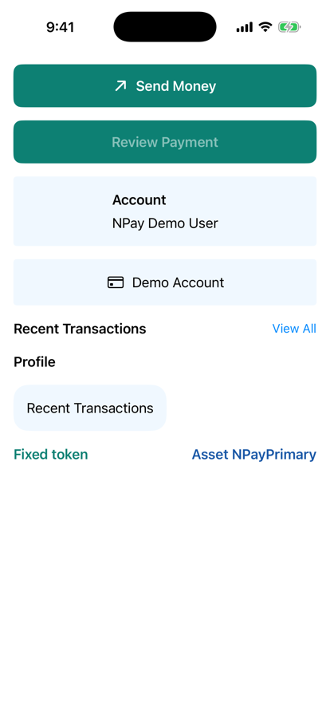
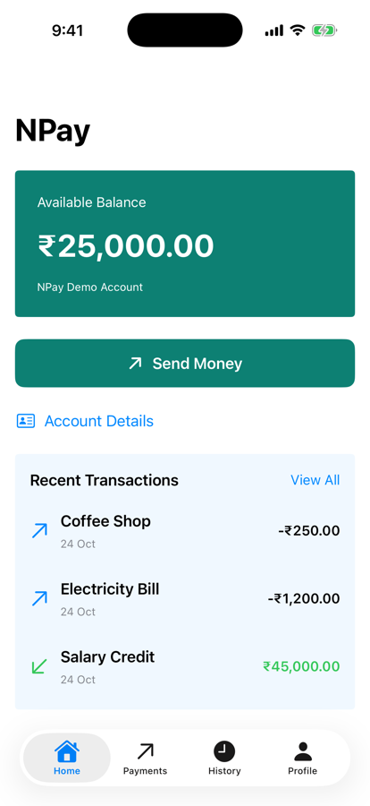
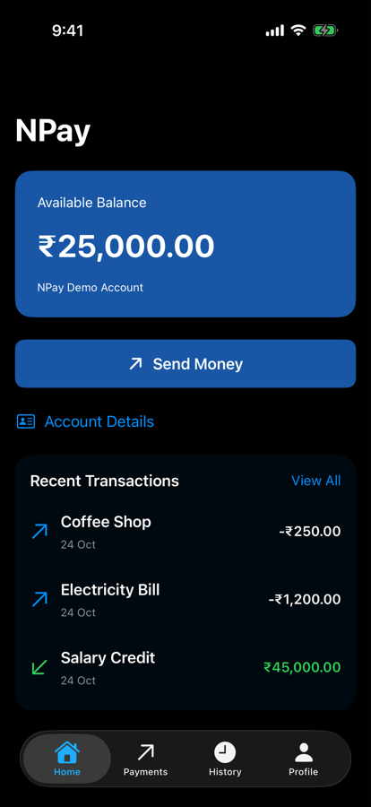

Part 1 · Our NPay milestone (section 1)
Same app, one visual language
.padding(16)
.background(
Color.blue.opacity(0.08),
in: RoundedRectangle(cornerRadius: 16)
)
.buttonStyle(.borderedProminent)- Consistent, reusable UI
- Without losing SwiftUI’s declarative style
- Business logic: the same
- Only the visual language becomes shared

Before: Home since 3.3

After: 3.7
Part 2 · Why not hardcode colours everywhere? (section 4, experiments 1–2)
Change two tokens, rebuild: everything follows
.foregroundStyle(.blue) .foregroundStyle(NPayTheme.Colors.primary)
primary→ a tealRadius.card18 → 4- No component or screen edited

Catalog

Changed tokens
Home

Changed tokens
Part 4 · NPayCard: generic reusable content (section 7)
Content: View, filled by the caller
struct NPayCard<Content: View>: View {
@ViewBuilder let content: Content
var body: some View {
content
.padding(NPayTheme.Spacing.medium)
.frame(maxWidth: .infinity)
.background(NPayTheme.Colors.cardBackground,
in: RoundedRectangle(
cornerRadius: NPayTheme.Radius.card))
}
}
NPayCard {
VStack {
Text("Account")
Text("Demo User")
}
}Content: a generic type parameterContent: View: must conform toView
@ViewBuilder on the property- The memberwise init takes a builder closure
- Callers write declarative view syntax
Two NPayCards: a VStack, an HStack
Part 5 · Build NPaySectionHeader (section 10)
One header for Home, History and Profile
struct NPaySectionHeader: View {
let title: String
let actionTitle: String?
let action: (() -> Void)?
var body: some View {
HStack {
Text(title)
.font(.headline)
Spacer()
if let actionTitle, let action {
Button(actionTitle, action: action)
.font(.subheadline)
}
}
}
}
NPaySectionHeader(title: "Recent Transactions",
actionTitle: "View All") {
router.select(.history)
}- Title left, optional action right
- Both
actionTitleandactionneeded:if letboth
In Home: View All switches to History
Part 6 · Design tokens versus semantic colours (sections 4, 20)
A fixed colour can’t follow the appearance
Light

Dark
// Assets.xcassets/NPayPrimary.colorset (our values)
// Any: sRGB 0.10, 0.34, 0.65 (the token)
// Dark: sRGB 0.45, 0.65, 1.00
Text("Asset NPayPrimary")
.foregroundStyle(Color("NPayPrimary"))| Colour | on white | on black |
|---|---|---|
Fixed primary | 7.1 : 1 | 2.9 : 1 |
| Asset, dark variant | 8.6 : 1 |
WCAG contrast ratio, computed from the sRGB values; 4.5 : 1 is the usual minimum for body text.
Color.blue.opacity(0.06)cards almost vanish (Home, next slide)
Part 7 · Integrate the design system (section 12)
Replace buttons, wrap sections, reuse headers
// A. Primary buttons
Button("Send Money") { submitPayment() }
.buttonStyle(.borderedProminent)
NPayButton("Send Money") { submitPayment() }
// B. Transaction sections
NPayCard {
VStack(alignment: .leading, spacing: 12) {
// C. Section headers
NPaySectionHeader(title: "Recent Transactions",
actionTitle: "View All") {
router.select(.history)
}
// rows
}
}- Home: NPayButton, NPayCard + header; BalanceCard uses tokens
- Review, Confirm, Back to Dashboard: NPayButton
Home

Home, dark
Part 7 · The payment flow, with components (integration)
Same flow as 3.5; new buttons
Review Payment: NPayButton

Confirm: NPayButton

Back to Dashboard: NPayButton
Part 7 · NPay component catalog (section 21)
General-purpose vs domain-specific
| Component | Responsibility | Level |
|---|---|---|
| NPayTheme | shared design tokens | design system |
| NPayButton | branded primary actions | design system |
| NPayCard | reusable card container | design system |
| NPaySectionHeader | consistent section headings | design system |
| NPayCardModifier | reusable card styling | design system |
| BalanceCard | domain-specific balance display | feature |
| TransactionRow | domain-specific transaction display | feature |
- Both reusable; different architectural levels
- BalanceCard knows money; NPayCard knows only layout
The catalog screen